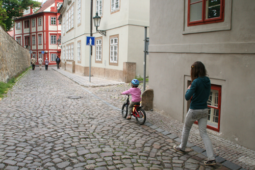

レスポンシブな画像を設定するためにはimg-fluidクラスを利用します。設定した画像にはmax-width:100%が設定されます。

img-thumnbnailをクラスを利用すると、画像をサムネイルのように見せることができます。
通常

サムネイル
サムネイル
画像を角丸や円にするにはroundedを利用します。
通常
角丸
円(楕円)
左寄せ・右寄せ・中央揃えを設定するためには、text-{位置}を利用します。左寄せはtext-left、右寄せはtext-right、中央寄せはtext-centerを使用します。
text-left
text-center
text-right
ブレイクポイントを設けてテキスト揃えをしたい場合はsm(544px以上)、md(768px以上)、lg(992px以上)、xl(1200px以上)を組み合わせて利用します。
(text-sm-center)
(text-md-center)
(text-lg-center)
(text-xl-center)
d-inlineの表示例
d-inline
d-inline
d-blockの表示例
d-block d-block●アイテムの左寄せ justify-content-start
FlexItem 1
FlexItem 2
FlexItem 3
FlexItem 4
FlexItem 5
●アイテムの右寄せjustify-content-end
FlexItem 1
FlexItem 2
FlexItem 3
FlexItem 4
FlexItem 5
●アイテムの左右中央揃え justify-content-center
FlexItem 1
FlexItem 2
FlexItem 3
FlexItem 4
FlexItem 5
●アイテムを両端から均等に並べる）justify-content-between
FlexItem 1
FlexItem 2
FlexItem 3
FlexItem 4
FlexItem 5
●アイテムを等間隔に並べる justify-content-around
FlexItem 1
FlexItem 2
FlexItem 3
FlexItem 4
FlexItem 5
水平向きflex-rowの場合 align-items-***(start,end,center,baseline,start
FlexItem 1
FlexItem 2
FlexItem 3
FlexItem 4
FlexItem 5
オーソドックスなCardの使い方

グリッドシステムと組み合わせることで、cardコンポーネントの形を水平にすることもできます。
ライトコース
ホームページ・ブログ開設など基礎を身に付けたい方向けコースです。
ナビゲーションバー(Navbar)
ナコラップス(collapse)のソースコード・作り方
詳しく見る
WEBST8は個人事業主・経営者さまに特化した大阪のWebスクールです。
ビジネスの目的を達成するための技術を学ぶというコンセプトが他のスクールとの大きな違いです。
ビジネスの目的を達成するための技術を学ぶというコンセプトが他のスクールとの大きな違いです。
Tooltip(ツールチップ) ヒントや注釈に
Popover(ポップオーバー) ヒントや注釈に
｜
｜